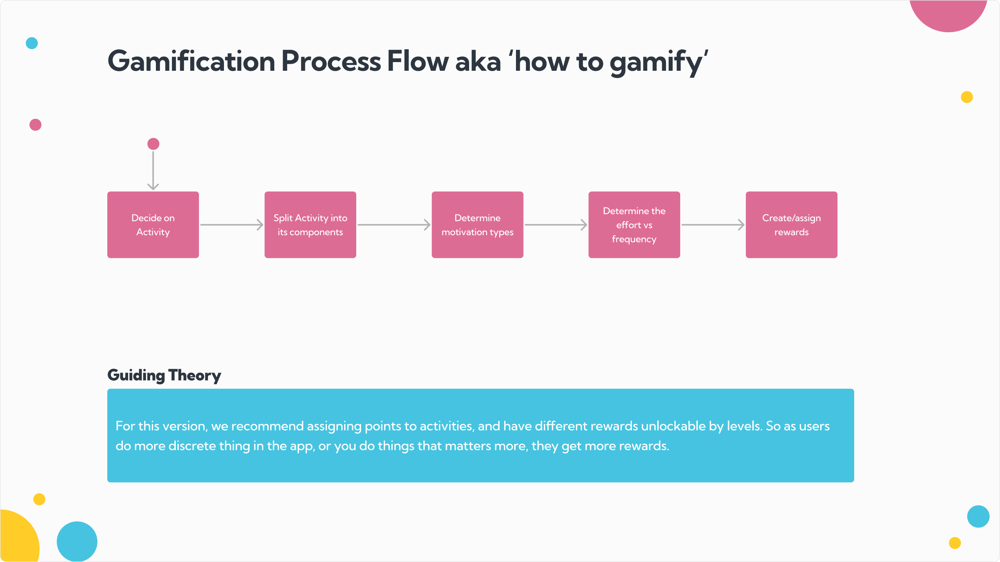
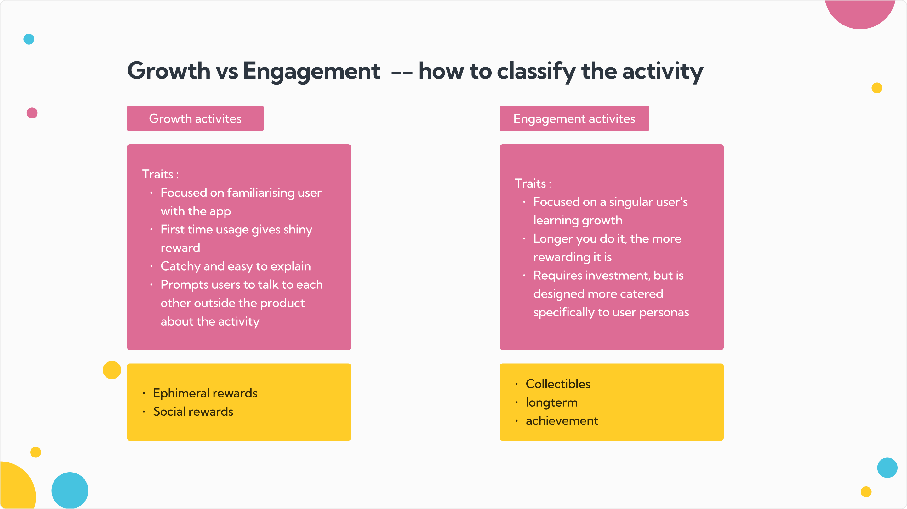

With the students mapped, this is what we built: a repeatable way to gamify any activity, the frameworks that decide which reward fits which moment, and the information architecture and wireframes that took it from theory to a clean build handoff.
guiding theory
How to gamify — a process, not a feature.
The team needed something they could run again without us. So the core deliverable was a repeatable five-step flow for gamifying any activity on the platform:
01Decide on the activity
02Split it into components
03Determine motivation types
04Weigh effort vs frequency
05Create & assign rewards
Our recommendation for this version: assign points to activities, and make rewards unlockable by level. As students do more discrete things — or do the things that matter more — they earn more.

step one in practice
Classify the activity: growth or engagement?
Every activity gets sorted before it's rewarded — because the two goals want completely different rewards.
Growth activities
Pull people in
Familiarise the user with the app
First-time usage gives a shiny reward
Catchy and easy to explain
Prompts users to talk about it outside the product
→ ephemeral & social rewards
Engagement activities
Deepen the habit
Focused on one student's learning arc
The longer you do it, the more rewarding it gets
Requires investment; tuned to specific personas
→ collectibles & long-term achievement

a shared vocabulary
Five motivations × six reward types.
Two taxonomies let the team weigh a reward's purpose against the student it's for — the conversation that actually decides build cost.
The matrix works both ways: pick an appropriate reward from an activity's effort and frequency — or pick an activity that suits an existing reward.
Social rewards should be given plenty, and spread across the whole spectrum.
For regular-to-long-term users, offering a choice between long-term rewards can be very valuable.
tuning over time
Different rewards for different stages of the journey.
New user
evoke curiosity
Rewards
Frequent ephemeral rewards
Show unlockables via UI / notifications
Activities
Exploration-oriented
Regular user
create habits
Rewards
Collectibles for regularity
Social rewards for reinforcement
A taste of monetary reward
Activities
Engagement-oriented
Long-term user
reward loyalty
Rewards
Monetary & long-term rewards
Large-scale achievement / social
Activities
Harder, intrinsic-led
Long-term, >2-week reward cycles
the north star
Extrinsic now, intrinsic later.
The whole system points one way: use reward value to move students from extrinsic motivation toward intrinsic over time — so eventually the learning is its own reward.
from framework to screens
Where it lives — IA flow & the wireframe handoff.
An information architecture tied the theory to real moments — entry points, state checks, reward outcomes — and low-fi wireframes gave design and dev a shared map before graphics and animation.
The gamification flow, end to end.
A system is only as good as the research under it.